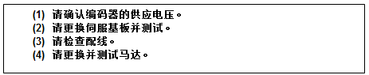
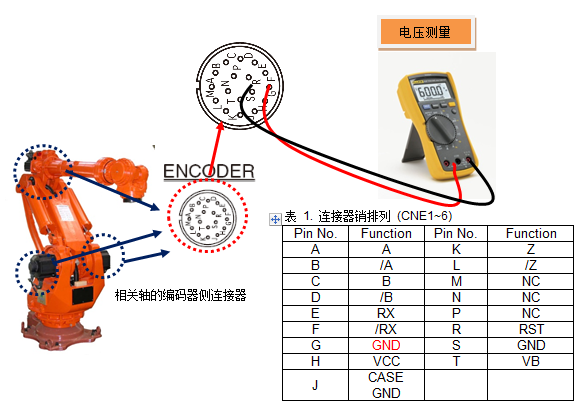
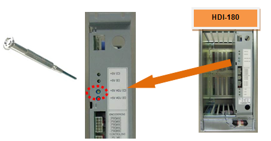
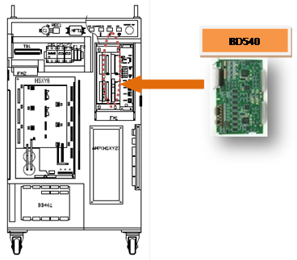
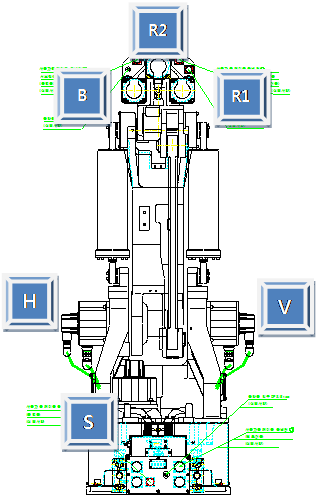
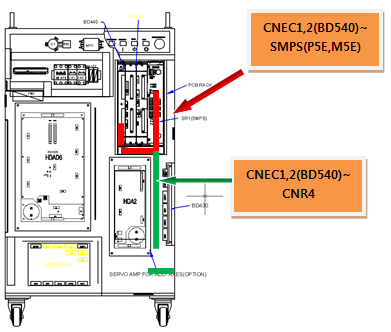
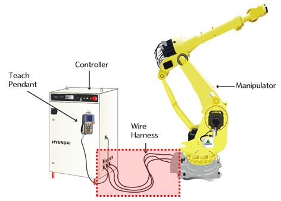
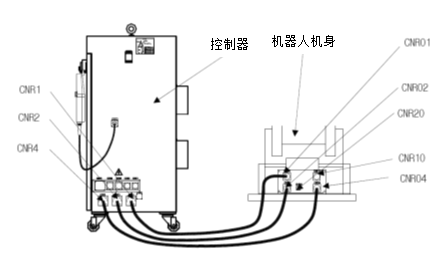
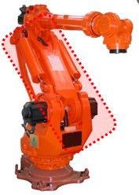

在伺服板上，通过从马达的编码器收到的线从硬件上检测到断线(或无信号)，则发生编码器断线错误。
因用于收发编码器数据的零件发生故障，或因配线或编码器屏蔽线的处理问题等原因，可能导致上述错误的产生。

1. 请确认编码器的供应电压。
检验供应到编码器的电源电压时，施加于编码器侧连接器的电压应处于5V±5% (4.75V ~ 5.25V)范围内。若编码器侧连接器的电压下降到4.75V以下，编码器不会正常工作，易发生上述错误。
请测量编码器侧连接器pin(G-H)的电压。

图 5.39 编码器输入电源测量方式
若被测电压低于基准电压，请旋转编码器电源供应装置的+5V ADJ(E)电压调整端子，使得编码器的连接器电压介于基准电压范围内。

图 5.40 编码器电源的调整方法
2. 请更换并测试伺服板。
更换伺服板后，若不发生错误，这就表示伺服板的不良。请把伺服板更换为正常品。

图 5.41 BD540 伺服板的更换方法
3. 请更换并测试马达。
更换伺服马达后，若不发生错误，这就表示伺服马达的不良。请把伺服马达更换为正常品。下图显示HX165机器人的各轴马达位置，其它机器人请参考该型号的维修说明书并予以更换。

图 5.42 HX165 机器人的各轴马达位置
4. 请检查配线状态。
请按照以下顺序检查编码器的配线状态。
步骤一: 请检查与编码器配线有关的连接器是否出现接触不良。
步骤二:
请检查编码器电线是否出现短路。请用万用表(测试仪)等装置以1:1方式确认各相的配线状态。
步骤三: 请更换并测试编码器的配线状态。
在编码器电线没有断线的状态下，若出现屏蔽线（Shield line）的接触不良，或者，编码器信号线与其他电线或机器人本体金属部位接触，此时仅靠短路检测方式则无法检测出这些异常，因此，请更换并测试配线状态。
１) 请检查控制器内部配线状态。
- 请检查CNEC1、2(BD540)连接器与SMPS(P5E、M5E)之间的接线状态。
- 请检查CNEC1、2(BD540)连接器与CNR4之间的接线状态。

图 5.43 控制器内部编码器配线
２) 请检查控制器与机器人之间的接线状态。
■ 请检查 CNR4与 CNR04之间的配线。

图 5.44 机器人与控制器之间的基本安装结构图

图 5.45 机器人本体与控制器的连接
３) 请检查本体内部的配线状态。
■ 请检查CER1与CNE1~6(编码器侧连接器)之间的接线状态。
配线检查请参考机器人维修说明书中的接线图。

图 5.46 机器人内部配线